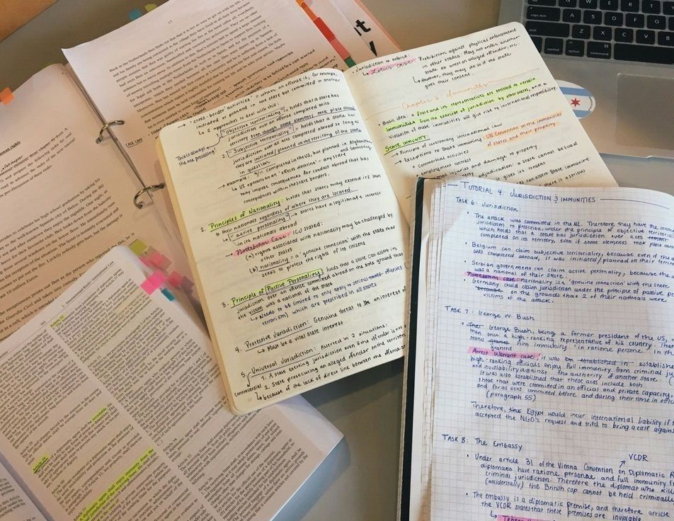
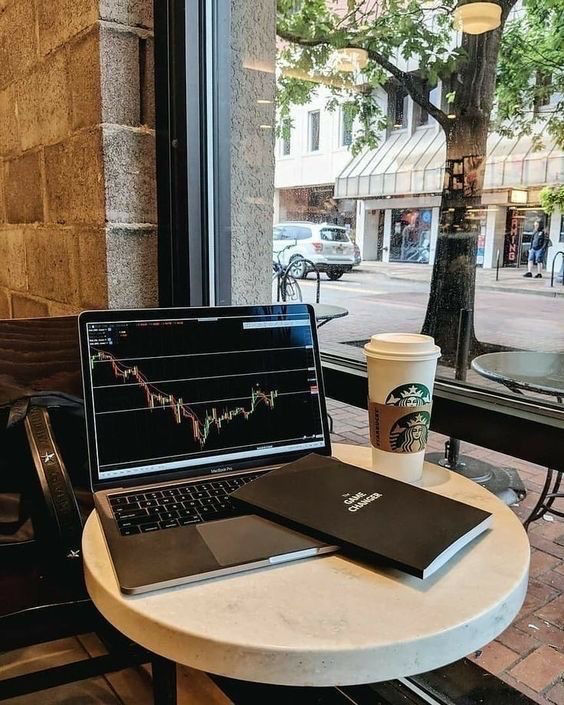
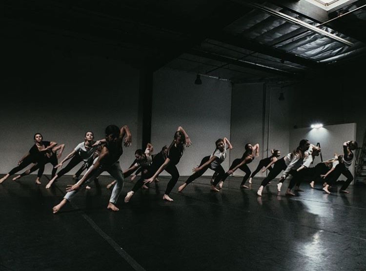

Ketika kita telah mencapai suatu pencapaian, bagaimanapun kita harus mempertahankan posisi tersebut agar kita tetap berada pada fase yang kita ingin dan impikan. Begitu pula dengan saya. Saya pun memiliki rencana untuk beberapa tahun ke depan.

Di tahun pertama, saya ingin lebih memfokuskan diri ke Pendidikan saya yang sempet berhenti sejenak pada masa trainee. Karena bagi saya Pendidikan juga merupakan salah satu hal yang sangat penting bagi kehidupan masa depan saya, walaupun sempat tertinggal saya yakin, saya dapat mengejar ketertinggalan tersebut.
Pada tahun kedua, saya ingin lebih mengasah skill vocal dan dance saya, lalu saya juga ingin membuat banyak karya yang dapat di dengar oleh para penggemar dalam bentuk music dan saya juga ingin membuat grup saya lebih dikenal oleh banyak masyarakat dunia tidak hanya di Korea Selatan dan di negara Asia lainnya saja.
Pada tahun ketiga, saya lebih memikirkan tentang masa depan. Karena saya berpikir saya tidak selamanya berprofesi menjadi seorang idol dan saya memutuskan untuk mulai berinvestasi dari hal-hal kecil, contohnya : membeli jam tangan branded yang memiliki daya jual yang tinggi, membeli barang-barang fashion yang juga memiliki daya jual di masa depan

Pada tahun keempat, saya mulai mencoba untuk mengembangkan investasi saya dalam bidang properti, seperti membeli apartemen,tanah,mansion, gedung-gedung di tempat strategis dan memiliki daya jual yang tinggi, selain itu saya juga belajar untuk mengembangkan beberapa lagu yang saya buat agar tidak tertinggal generasi selanjutnya.
Pada tahun kelima, saya belajar tentang dunia persahaman, setelah saya paham saya ingin merambah investasi saya di bidang saham. Seiring berjalannya waktu saya juga ingin menambah skill saya dalam dunia acting dan per-filman agar saya lebih berkembang tidak hanya di dunia musik.
Pada tahun keenam, saya mulai mencoba casting untuk beberapa film dan dapat memainkan beberapa peran dalam serial drama maupun series. Karena saya sudah memiliki banyak investasi dan penggemar saya mulai berpikir untuk mengembangkan usaha di bidang entertaiment, oleh karena itu saya belajar berbagai macam hal yang dapat menunjang pemikiran tersebut.

Pada tahun ketujuh, saya berencana untuk membangun agency milik saya sendiri lalu mencari banyak trainee yang berbakat dan memiliki keinginan untuk menjadi seorang bintang sebagaimana saya dahulu. Karena saya berharap orang lain bisa sukses seperti saya dan bisa mengikuti jejak saya bahkan bisa lebih dari saya.